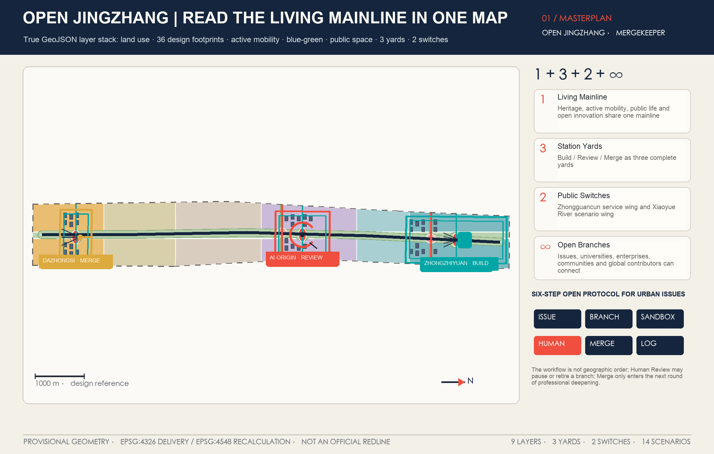
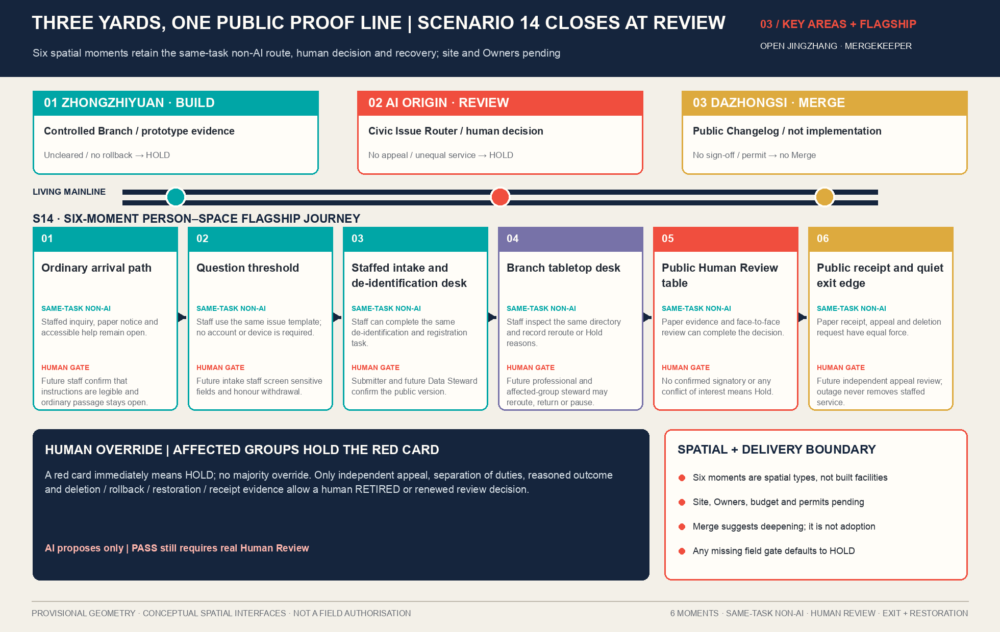
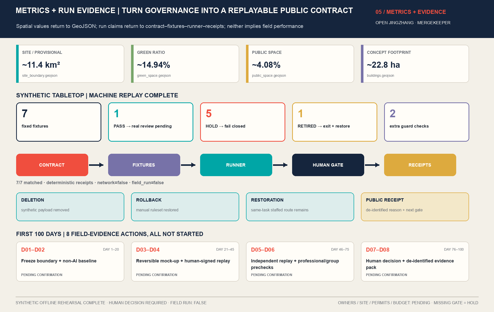

Turn a century-old railway remembered as heritage into an open mainline that continuously receives urban issues, publicly validates AI proposals and preserves their version history.
Urban issues come to Jingzhang for public validation first. AI proves; people decide.
PUBLIC MEMORYNot AI taking over the city, but a city with an open mainline for validating AI in public.
SITE / PROVISIONALapprox. 11.4 km²
GREEN / GEOMETRY0.149399
PUBLIC / GEOMETRY0.040773
Overview map
Read the Living Mainline, three differentiated station yards, two public switches and expandable branches in one view. Provisional boundaries recede into a dashed evidence layer; the main narrative derives from the submitted GeoJSON.

The long corridor is unfolded horizontally for legibility; every vertex comes from the submitted GeoJSON.AI PROVES; PEOPLE DECIDE

The stations are not three positioning cards, but one validation pipeline with gates before and after each stage.3 STATION YARDS
Build—Review—Merge station guide
Select a station yard to read its spatial move, representative scenario, human gate and exit condition.
BUILD / ZHONGZHIYUAN
Stack Yard
Shared Physical AI prototypes, indoor simulation and assembly; indoor validation and public-space trials pass through separate gates.
Representative scenario Embodied-robot mixed-mobility sandboxHuman gate Professional approval before leaving closed testingSpatial move Shared prototypes, reversible yards, limited pathsExit condition Isolate the version on overreach, non-reproducibility or failed takeover
REVIEW / AI ORIGIN
Open Origin Station
Residents, professionals and operators review together; AI helps explain but never makes the final urban decision.
Representative scenario Urban Issue RouterHuman gate Joint review by users, professionals and public stewardsSpatial move Open concourse, AI civic living room, human-service entryExit condition Hold when explanation, exit or equivalent service fails
MERGE / DAZHONGSI
Agent Exchange
Multi-agent interoperability and urban-application exchange; Merge only recommends professional deepening and is not deployment.
Representative scenario Global Developer Interoperability WeekHuman gate Joint review, on-site takeover and professional sign-offSpatial move Switch convergence, visible collaboration, public ground floorExit condition Retire when reproduction, authority or public value fails
Six-step open protocol
Urban issues move through Issue—Branch—Sandbox, but Human Review must explicitly return, retire or recommend professional deepening. The system never merges automatically.
Issue · Define the problem first
Publish the problem, affected groups, evidence boundary and responsibility gaps. An Issue is not project approval and receives no automatic priority.
Branch · Let alternatives coexist
Each branch registers assumptions, sources, a proposed Owner and exit conditions. Vetoes involving safety, equity or statutory conditions enter Hold first.
Sandbox · Validate only what can be evidenced
Prefer public sources, fixed materials and synthetic inputs. Stop immediately when human takeover fails, sensitive data appear or facts lack sources.
Human Review · Make an explicit decision
AI submits evidence only. Residents, professionals, operators and public stewards choose the next step. Without a human choice, the process stops here.
No human decision yet; Merge / Retired remains locked.
Merge / Retired · Execute the human decision
This step must await Human Review. Merge only recommends entry into the next round of professional deepening and review; Retired stops progress and preserves the failure record.
Changelog · Leave an auditable record
Record reasons for adoption, revision, return and withdrawal without disclosing personal data. Later contributors can trace each version to its evidence and human decision.
All six steps remain readable with JavaScript disabled; when enabled, visitors can inspect each step and simulate a human decision.
Three scales of scope
Coordinated research addresses ecology and collaboration; the overall design establishes the spatial mainline; key areas deliver Build—Review—Merge. 1+3+2+∞ is a working structure, not a fourth boundary.
The 36 building footprints are conceptual renewal typologies, not an existing-condition survey or demolition ruling. Nine actions enter, pause or exit according to evidence maturity.
Four-level reuse-first method
Retain → repair → adaptively reuse → await professional determination. No real building receives a demolition conclusion before ownership, structural safety, heritage and statutory-planning evidence is available.
Three phases · nine actions
Phase 1: OJZ-01/02/03/04/09 for the mainline, three yards and Human Review response desk. Phase 2: OJZ-05/06/07 for switches, failure archive and scorecard. Phase 3: OJZ-08 adaptive-reuse study. Phases express evidence dependencies, not construction promises.
AI scenarios
Fourteen branches share one Model Passport: purpose, data minimization, Owner, Human Review point, version, and success/exit indicators. Red marks industry-test scenarios.
Showing three flagship simulations that use only public materials and synthetic inputs.
01 Multi-agent orchestration yardStack Yard / conflict detection and task replayINDUSTRY TEST02 Embodied-robot mixed-mobility sandboxZhongzhiyuan / closed yard and limited pathsINDUSTRY TEST03 Model-safety red-team fieldZhongzhiyuan / isolated data and independent red teamINDUSTRY TEST04 AI-native commerce trialDazhongsi / merchant confirmation and human handoffINDUSTRY TEST05 Compute—energy coordinationZhongzhiyuan / engineer approval and policy restorationINDUSTRY TEST06 Global Developer Interoperability WeekAgent Exchange / joint review and on-site takeoverINDUSTRY TEST07 Explainable community-affairs assistantAI civic living room / staff confirm high-impact responsesCIVIC BRANCH08 Age-friendly living coordinatorOrigin Service Station / separate consent and deletion at any timeCIVIC BRANCH09 Continuous accessible navigationThree-area active-mobility network / on-site user reviewCIVIC BRANCH10 Open AI literacy classroomOrigin Classroom / teachers review course outputsCIVIC BRANCHFLAGSHIP SIMULATION11 Jingzhang cultural-evidence guideHeritage mainline / source editors review every itemCIVIC BRANCHFLAGSHIP SIMULATION12 Park-ecology maintenance assistantBlue-green corridor / professionals decide interventionCIVIC BRANCH13 Co-governed night-safety light bandMainline and switches / duty staff reviewCIVIC BRANCH14 Urban Issue RouterOpen Origin Station / issue committee confirms priorityCIVIC BRANCHFLAGSHIP SIMULATION
Flagship 14 · Urban Issue Router
A resident moves from an ordinary route through question intake, staffed service, a public receipt and exit restoration. AI produces only a reviewable routing suggestion; Human Review decides Pass, Hold or Retire, while an equivalent non-AI service remains available.
Ordinary routeA resident may pass through Open Origin Station without participating or scanning, with no reduction in existing service.
Question thresholdRead the data boundary; choose an anonymous paper card or synthetic digital form. No real personal data enter this rehearsal.
Staffed counter · de-identifyDuty staff provide the same task without AI, check fields, and remove contact details or other personal information.
Branch tableAI suggests an explainable Branch only. Its Owner, accountability gaps and Hold reasons must remain reviewable.
Human ReviewPending human roles check lawful conditions, affected groups and the appeal route; the appeal role remains separate. AI never ranks public priority.
Receipt · exit restorationPublish only de-identified status, role and gate. On exit, delete the session, roll back rules and retain staffed service.
The offline runner replayed 7/7: 1 PASS, 5 HOLD and 1 RETIRED. This view shows the PASS case, which still requires Human Review.
TABLETOP RESULTPASSHUMAN DECISION REQUIRED
Input boundary Synthetic, de-identified issues onlyAccountability gate Synthetic role fields complete; real appointments pendingHuman equivalent Same-task paper card and counterNext step Pending human review roles
Pass is not Merge: AI suggests a Branch only. Without an explicit human decision to continue, the issue cannot enter professional deepening and never implies adoption, procurement or deployment.
Blocker FORBIDDEN_ISSUE_FIELD: phone_numberImmediate action No automated routing or human reviewRepair Remove the field and complete evidenceNext gate Rerun the same fixture
Hold is not ignore: the runner fails fast and publishes the blocker. After repair, the package must replay under the same rule and cannot be manually relabelled Pass.
Red-card reason Repeated service-equivalence failureIndependent appeal Review completed and red card upheldHuman authority No majority override; close the BranchPublic boundary Retain de-identified failure reason only
Failure exit and restoration: stop automated routing, delete the synthetic session, roll back to staffed intake, confirm the human route remains available, and publish a Retired receipt without personal information.
synthetic_offline_rehearsal_complete · synthetic=true · field_run=false · human_decision_required=true · not_authorized_not_run This section translates the contract, fixtures and committed receipts into a readable interface. All seven synthetic cases match expectations; this proves only that the contract, failure injection and receipts can be replayed deterministically—not field effectiveness, safety, compliance, authorisation or implementation.
Core metrics
Spatial numbers are recalculated in EPSG:4548. They demonstrate internal consistency in the submission, not statutory areas or realized performance. Unknown statutory FAR remains null.

Task coverage · self-check status
All 23 call and Agent tasks, 15 design-depth responses and five mandatory standards have dedicated sections, layers, metrics, sources, drawings and self-check evidence.
23/23
Task coverage
17 call tasks plus Agent.1—Agent.6, each with specific evidence rather than blanket selection.
LOCATABLE
15/15
Design depth
Complete means the response and its evidence gaps are fully stated, not that unknown conditions have been obtained.
EVIDENCED
5/5
Mandatory standards
Project tasks, urban design, statutory-planning boundaries and land-use classification are traced separately.
ADDRESSED
9
Spatial layers
Delivered in EPSG:4326; areas and ratios are consistently recalculated in EPSG:4548.
GEOMETRY PASS
Sources · assumptions
Fourteen minimally sufficient sources support only their evidenced facts; eight international cases translate mechanisms without extrapolating law, resources, authority or performance.
Sources
Official call and Agent taskbook
MOHURD urban-design and detailed-planning bases
MNR land-use classification guide
Repository provisional-geometry register
Eight primary government, institutional or university cases
Assumptions
No official polygon, statutory plan or ownership data
No existing-building survey, heritage control lines or utility capacity
Buildings and public spaces are conceptual proposals
AI scenarios require voluntary participation, minimization and exit
Human Override is the non-removable master switch
PROVISIONAL precision statement
This proposal uses repository-provided provisional geometry for open co-creation, directional design, formal content review, visualization, geometric recalculation and self-checks. It must not be interpreted as an official redline, statutory control boundary, approval basis or exact-area conclusion. Missing official precise geometry is not a blocker for this review; all calculations and checks must be rerun when it becomes available.
PRECISION WARNING · NOT A BLOCKER
Human final authority
An Issue is not project approval; a Sandbox is not permission to operate; Merge only enters the next round of professional deepening and review and does not mean government adoption, procurement, construction or deployment. The Changelog records adoption, revision and withdrawal without personal data.